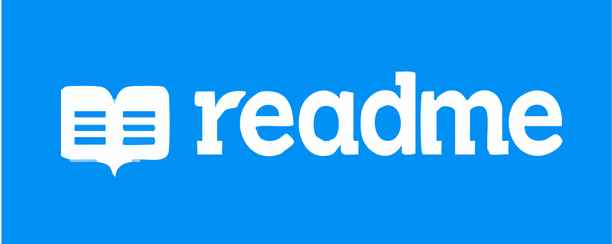

Purpose of README file
You can add a README file to a repository to communicate important information about your project.
A README, along with a repository license, citation file, contribution guidelines, and a code of conduct,
communicates expectations for your project and helps you manage contributions.
Read more
Purpose of Wireframe
In the early stages of design, wireframes are typically created to outline the fundamental structure,
layout, and functionality of the user interface without getting into the specifics of colors, graphics,
or detailed content. Wireframes are a simplified, visual representation of a digital interface, such as
a website, mobile app, or software application. They are a fundamental step in the design process that
serves as a blueprint or skeleton for the final product.
Read more